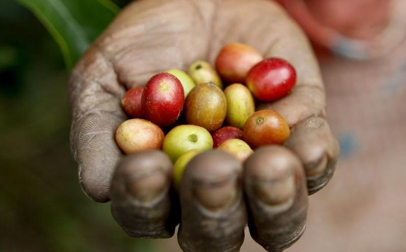

Notre compromis de gastronomie durable
La gastronomie est parfois appelée « l’art de la table ». Cela peut aussi faire référence à un style de cuisine d'une région particulière. En d'autres termes, la gastronomie se réfère donc souvent à la nourriture et à la cuisine locales. La durabilité est l'idée que quelque chose (par exemple l'agriculture, la pêche ou même la préparation des aliments) est fait d'une manière qui ne gaspille pas nos ressources naturelles et peut être poursuivi dans le futur sans nuire à notre environnement ou à notre santé. La gastronomie durable, par conséquent, est une cuisine qui tient compte de la provenance des ingrédients, de la façon dont les aliments sont cultivés et dont ils arrivent sur nos marchés et éventuellement dans nos assiettes.
Une cuisine 100% Latino-Americaine
Macondo est le fruit du travail du chef Cristhian Naufal. Depuis 2021, sa proposition gastronomique est un point de rencontre entre les différentes cuisines d'Amérique latine : un voyage du Mexique à l'Argentine, avec plusieurs arrêts en Colombie.